10. [TD] : Implémentation de la couche [ui] avec une interface Swing
Mots clés : architecture multicouche, Spring, injection de dépendances, bibliothèque de composants Swing.
| 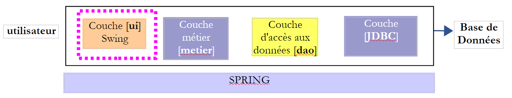 |
10.1. Support
| 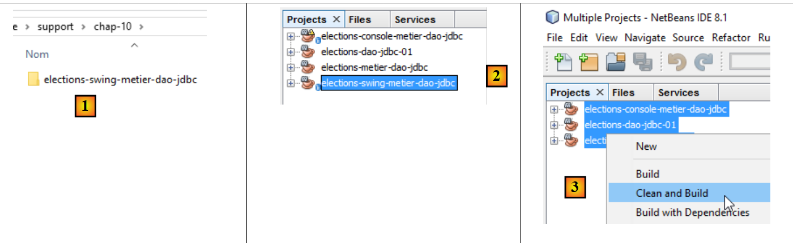 |
Dans la couche [UI], on veut construire une interface graphique Swing. Netbeans a un outil [Matisse] pour construire ces interfaces Swing qui est supérieur à ce que peut proposer Eclipse. Les interfaces Swing tendent à être remplacées par des interfaces JavaFx. Netbeans et Eclipse utilisent le même outil pour construire ces dernières. Si donc, on construit des interfaces JavaFx, on peut garder Eclipse de bout en bout de l'architecture en couches.
Netbeans peut ouvrir n'importe quel projet Maven. On va donc utiliser le projet Maven précédent et lui ajouter une interface Swing. En [2], on charge (File / Open project) les projets Maven des trois couches que nous avons construites avec Eclipse. Puis, on construit leurs binaires [3]. Les options [Build] et [Clean and Build] construisent le binaire du prjet sur lequel elles sont appliquées. Ces binaires sont placés dans le dossier [target] [4-5] du projet :
| 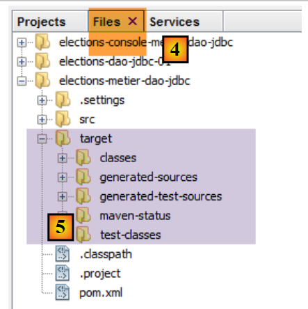 |
L'option [Clean] supprime ce dossier [target]. L'option [Build] le reconstruit. L'expérience montre que lorsqu'on rencontre des problèmes inattendus, la première chose à faire est un [Clean and Build] sur le projet pour être sûr qu'on travaille bien avec la dernière version de celui-ci. C'est notamment nécessaire lorsqu'on a des fichiers de configuration qui s'ils sont modifiés ne provoquent pas une recompilation automatique lorsqu'on exécute le projet. Il faut alors forcer cette recompilation par un [Clean and Build] pour que leurs nouvelles versions soient installées dans le dossier [target].
10.2. Fonctionnement de l'application
Revenons à l'architecture globale de l'application [Elections] :
| 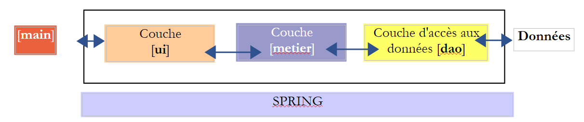 |
Nous nous intéressons maintenant à une nouvelle implémentation de la couche [ui]. L'unique implémentation réalisée pour le moment est une interface console. Nous créons maintenant une interface graphique.
L'utilisateur disposera de l'interface suivante pour interagir avec l'application [Elections] :
| 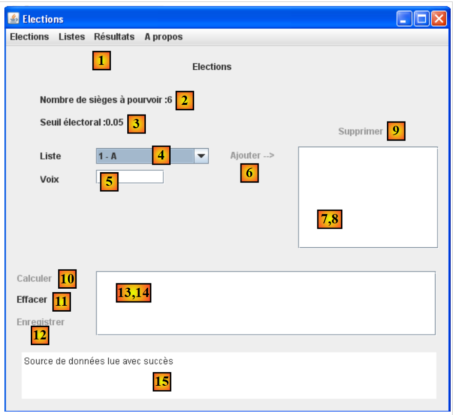 |
| 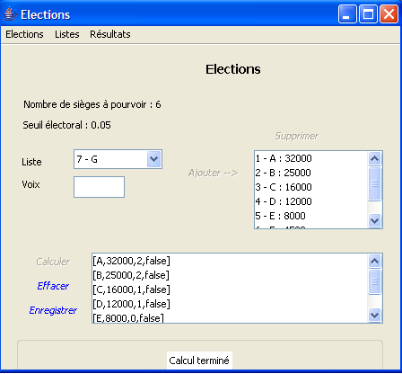 |
L'interface graphique se trouve dans la couche [ui]. C'est elle qui interagit avec l'utilisateur.
- au démarrage, l'application console [main] instancie les trois couches de l'application grâce à Spring. Ceci est fait avant même que l'interface graphique ne soit visible. Toujours dans cette phase d'initialisation, les renseignements caractérisant l'élection (nombre de sièges à pourvoir, seuil électoral, listes en compétition) sont demandés à la couche [dao]. Si cette phase d'initialisation échoue (impossibilité d'accéder aux données par exemple), un message d'erreur est affiché sur la console et l'interface graphique n'est pas affichée.
- si la lecture des données s'est bien passée, l'interface graphique est affichée avec les renseignements suivants (cf copie d'écran plus haut) :
- le nombre de sièges à pourvoir dans (2)
- le seuil électoral dans (3)
- les identifiants et noms des listes candidates dans (4)
- l'utilisateur affecte alors à chaque liste candidate son nombre de voix à l'aide des champs 4 (id - nom), 5 (voix), 6 (pour ajouter).
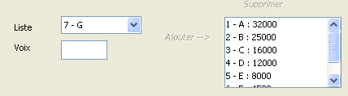
- on peut alors utiliser le lien (10) pour calculer les sièges :
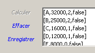
- le lien [Enregistrer] (12) permet d'enregistrer les résultats dans la source de données.
10.3. La classe [ElectionsSwing] d'implémentation de la couche [ui]
10.3.1. Le projet Netbeans
Note : Le paragraphe 22.4, page 419, indique comment se procurer Netbeans.
Le projet Netbeans final de l'application aura la forme suivante [1]. Construisez-le en suivant les étape [2-5] :
| 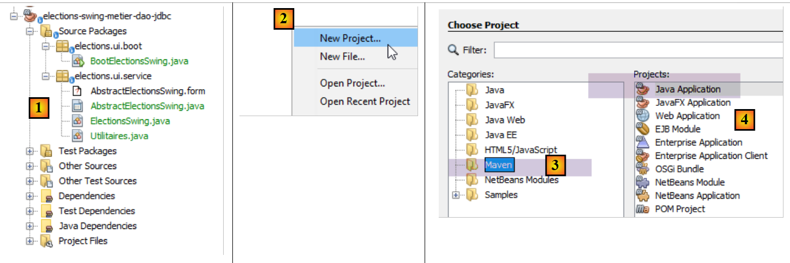 |
| 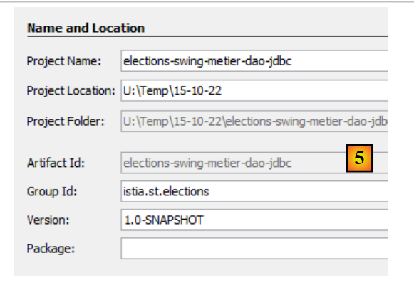 |
On s'assurera que le projet est configuré pour être compilé par un JDK 1.8 [1-6] :
| 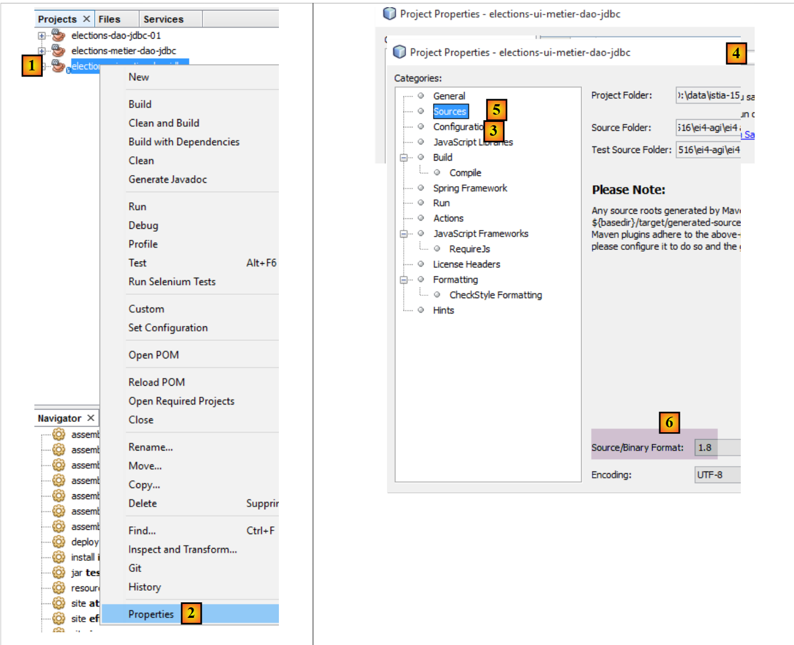 |
10.3.2. Configuration Maven
Le nouveau projet [elections-swing-metier-dao-jdbc] va s'appuyer sur le précédent projet [elections-console-metier-dao-jdbc]. Pour cela, on ajoute une dépendance Maven de la façon suivante [1-3] :
| 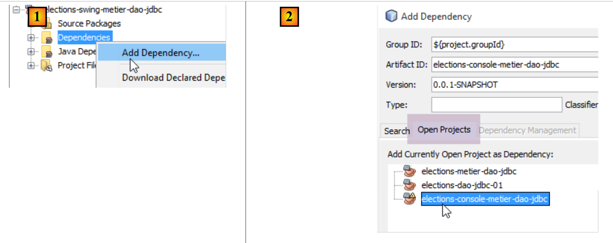 |
| 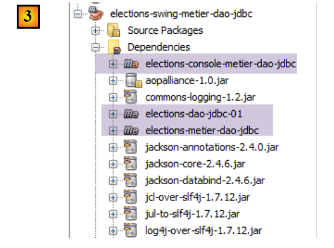 |
10.3.3. Construction de l'interface graphique
Pour créer l'interface graphique, nous pouvons procéder comme suit :
| 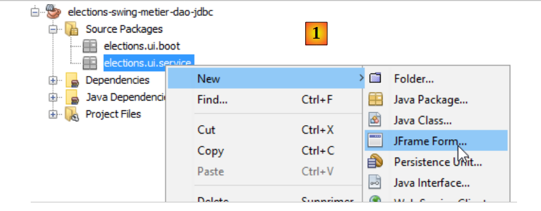 |
| 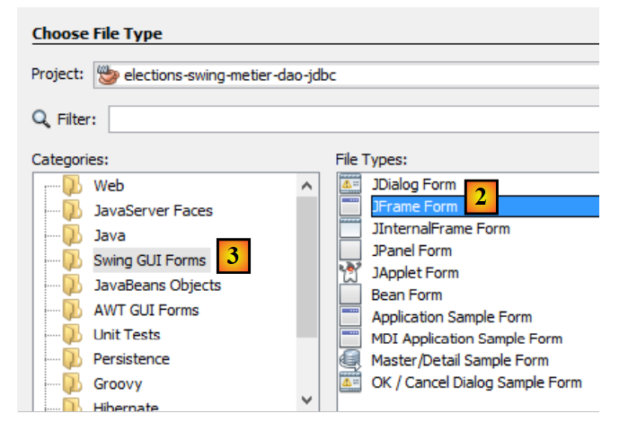 |
- [1] : ajout d'un objet au paquetage [elections.ui.service]
- [2] : choix de l'option [JFrame Form] dans la catégorie [Swing GUI Forms]
| 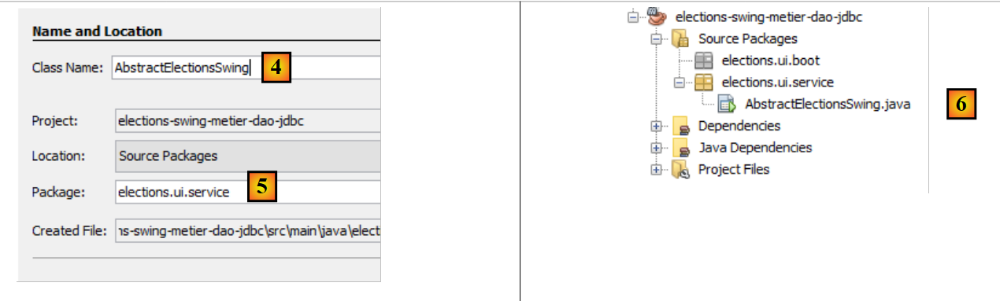 |
- [4] : donner un nom à la classe
- [5] : le package de la classe.
- Terminer l'assistant.
- [6] : la classe générée
| 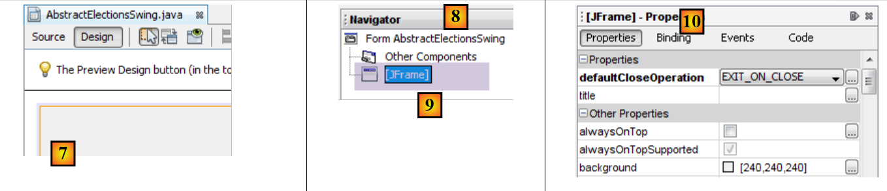 |
- [7] : la classe [AbstractElectionsSwing] en mode [Design]
- [8] : l'onglet [Navigator] qui affiche l'arbre [9] des composants de la fenêtre
- [10] : l'onglet [Properties] qui affiche les propriétés du composant [jFrame] sélectionné en [9]
| 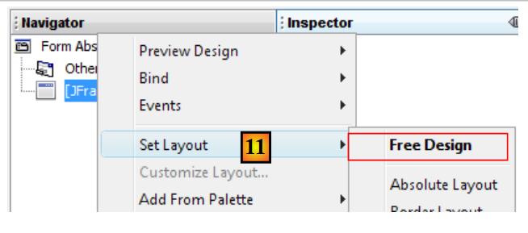 |
- [11] : [JFrame] est un conteneur de composants. Ceux-ci peuvent être disposés dans le conteneur selon diverses règles de positionnement appelées layouts. Ici, nous choisissons le layout [Free Design] [14] qui permet de positionner des composants de façon libre dans le conteneur.
Nous trouvons les composants dans la barre d'outils appelée Palette :
| 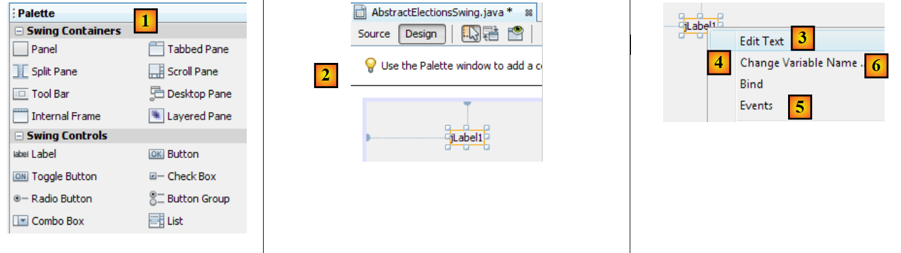 |
- [1] : la palette
- [2] : un composant JLabel est déposé dans le conteneur de composants
- avec un clic droit dessus, on a accès à diverses propriétés : son nom [4], son texte [3] ou bien ses gestionnaires d'événements [5]. Nous utilisons [3] pour fixer le texte [6].
| 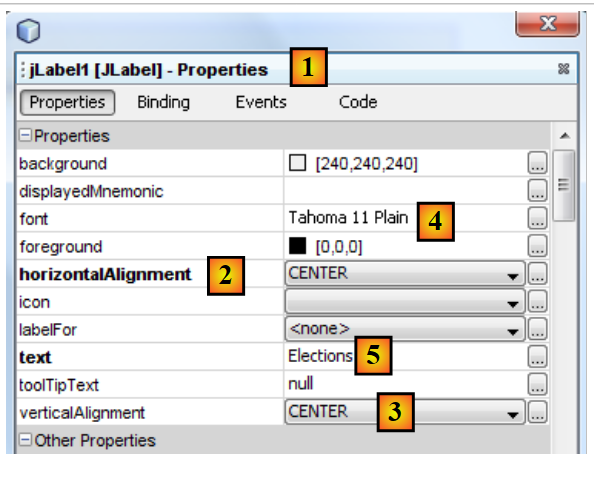 |
- [1] : l'onglet [Properties] du composant [JLabel] donne accès aux propriétés de celui-ci : son positionnement horizontal [2], vertical [3], la police de caractères du texte [4], le texte [5].
Lorsqu'un composant est déposé et configuré sur l'interface graphique et qu'on sauvegarde (Ctrl-S) le travail fait, du code est généré dans la classe [AbstractElectionsSwing] :
| 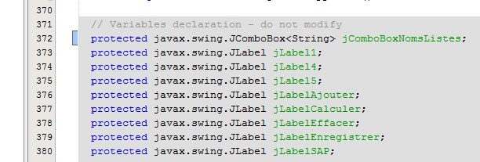 |
| 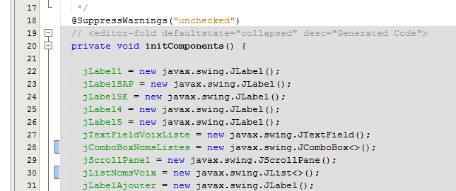 |
Il ne faut pas modifier ce code grisé car il est supprimé et régénéré lors de la sauvegarde suivante. Les modifications faites seraient alors perdues.
On trouvera un tutoriel de création d'une interface graphique avec Netbeans à l'URL [https://netbeans.org/kb/docs/java/quickstart-gui.html?print=yes#design] (novembre 2015).
Nous construisons maintenant l'interface suivante :
| 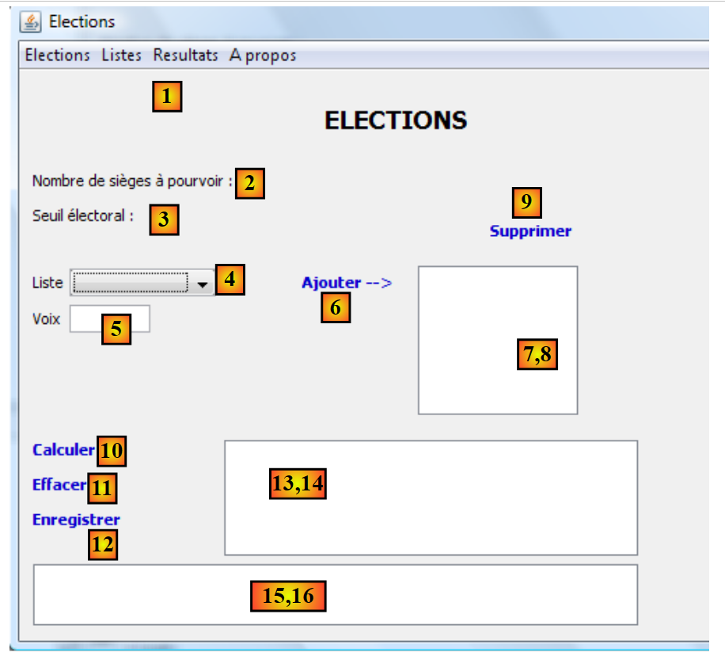 |
Les composants de l'interface sont les suivants :
n° | type | nom | rôle |
| JMenuBar | jMenuBar1 | un menu |
| JLabel | jLabelSAP | le nombre de sièges à pourvoir |
| JLabel | jLabelSE | le seuil électoral |
| JComboBox | jComboBoxNomsListes | liste des noms des listes en compétition |
| JTextField | jTextFieldVoixListe | le nombre de voix d'une liste |
| JLabel | jLabelAjouter | pour ajouter une liste à (8) |
| (JScrollPane, JList) | jListNomsVoix | les noms et voix des listes |
| JLabel | jLabelSupprimer | pour supprimer de (8) la liste sélectionnée dans (8) |
| JLabel | jLabelCalculer | pour calculer les résultats de l'élection |
| JLabel | jLabelEffacer | pour effacer les résultats de l'élection |
| JLabel | jLabelEnregistrer | pour enregistrer les résultats de l'élection |
| (JScrollPane, JList) | jListResultats | pour afficher les résultats de l'élection |
| (JScrollPane, JTextPane) | jTextPaneMessages | pour afficher des messages de suivi |
L'annotation (JScrollPane, JList) [13-14] est là pour indiquer que lorsqu'on dépose un composant [JList] dans la fenêtre, il est automatiquement inséré dans un composant [JScrollPane] qui permet le défilement de la liste. C'est le composant [JScrollPane] qui permet de voir tous les éléments de la liste alors que seul un nombre restreint d'entre-eux n'est visible à un moment donné. Il en est de même pour le composant [JTextPane] [15-16].
Le menu pourra être créé de la façon suivante :
| 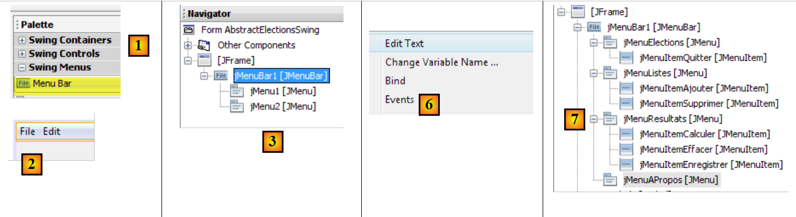 |
- [1, 2] : un composant [Menu Bar] est déposé sur la fenêtre
- [3] : le menu généré par défaut tel que présenté dans l'onglet [Navigator]
- [4,5,6] : par un clic droit sur une option de menu, on peut :
- changer son texte [4], son nom [5]
- gérer ses événements [6]
- [7] : le menu souhaité
Le menu désiré est le suivant :
niveau 1 | niveau 2 |
Elections | |
Quitter | |
Listes | |
Ajouter | |
Supprimer | |
Résultats | |
Calculer | |
Effacer | |
Enregistrer | |
A propos |
On peut tester l'interface graphique à tout moment :
| 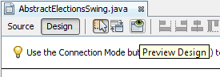 |
Lors de la construction de l'interface, il faut associer un gestionnaire d'événement sur certains labels et menus [Ajouter, Effacer, ...]. Voici comment faire :
| 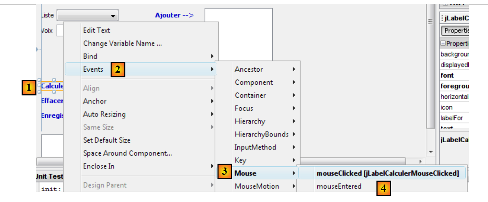 |
- [1] : cliquer droit sur le composant dont on veut gérer un événement
- [2] : choisir l'option [Events]
- [3] : choisir une catégorie d'événements
- [4] : choisir l'événement qu'on veut gérer
Le code Java généré par cette opération est le suivant :
- lignes 1-5 : un gestionnaire d'événement est ajouté au composant jLabelCalculer. La méthode addMouseListener attend comme paramètre une classe implémentant l'interface MouseListener suivante :
| 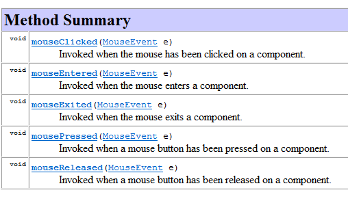 |
L'interface MouseListener est implémentée par différentes classes dont la classe MouseAdapter. Celle-ci implémente les cinq méthodes de l'interface MouseListener mais ces méthodes ne font rien. Aussi faut-il dériver cette classe pour implémenter la ou les méthodes de son choix. Ce qui est fait dans le code ci-dessus et repris ci-dessous :
Le code ci-dessus utilise la technique de la classe anonyme exposée au paragraphe 2.5 du cours [ref1].
Ligne 1, le paramètre de la méthode addMouseListener est une classe anonyme, définie à la volée. C'est une instance d'une classe dérivée de la classe MouseAdapter (ligne 1) dont on redéfinit la méthode mouseClicked (lignes 2-4) afin qu'elle fasse quelque chose.
La méthode jLabelCalculerMouseClicked appelée ligne 3 est définie comme suit :
Le développeur gère l'événement "MouseClicked" en mettant du code dans cette méthode.
Tous les gestionnaires d'événements sont générés par Netbeans de cette façon. Le développeur peut ignorer les lignes de code générées par Netbeans pour associer une méthode à un événement d'un composant. Il peut se contenter de mettre son code en ligne 2 ci-dessus. Voici un exemple :
Si on exécute l'interface graphique et qu'on clique sur le lien [Calculer] on obtient un message sur la console :
| 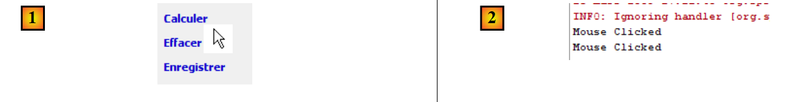 |
- [1] : on clique deux fois sur le label [Calculer]
- [2] : le gestionnaire de cet événement a été exécuté et a produit les messages mouseClicked dans la console de Netbeans.
Les composants [jComboBoxNomsListes, jListNomsVoix, jListResultats] sont déclarés de la façon suivante :
Ces composants sont des listes qui normalement sont paramétrées par un type T : le type des éléments du modèle affiché par les composants. Ce type T, peut être quelconque. La valeur affichée dans le composant liste est de type [String]. Par défaut, c'est alors la méthode [T.toString()] qui est utilisée pour l'affichage. Afin de mieux maîtriser ce qui sera affiché, le type T sera ici le type String. Aussi, la déclaration correcte de nos listes est la suivante :
On obtient ce résultat en modifiant l'une des propriétés du composant :
| 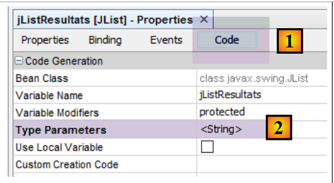 |
10.3.4. Séparation du code
Revenons à la structure de notre application :
| 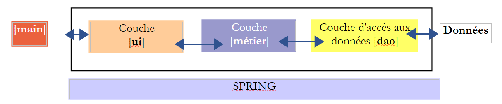 |
La classe [AbstractElectionsSwing] doit implémenter la couche [ui] ci-dessus. Son code généré par Netbeans ne contient pour l'instant que du code de gestion de la fenêtre et des gestionnaires d'événement qui pour l'instant ne font rien. Ci-dessus, on voit que la classe [AbstractElectionsSwing] devra gérer des échanges avec la couche [métier]. Cette gestion se fera dans les gestionnaires d'événement. Pour clarifier la structure du code, on décide de le placer dans deux classes :
- [AbstractElectionsSwing] qui restera comme elle a été générée par Netbeans à quelques détails près. Cette classe ne gèrera aucun événement elle-même. Les gestionnaires d'événements seront vides et déclarés abstraits. Ils seront implémentés par une classe dérivée de [AbstractElectionsSwing].
- [ElectionsSwing], classe dérivée de [AbstractElectionsSwing] qui implémentera tous les gestionnaires d'événement.
Ce type de séparation n'est pas inhabituel. On le trouve par exemple dans les pages web ASP.NET (version non MVC). Le projet Netbeans évolue comme suit :
| 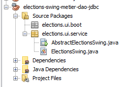 |
Le code de la classe [AbstractElectionsSwing] lui, évolue de la façon suivante :
- ligne 1 : la classe est déclarée abstraite
- lignes 3-5 : gestion du clic sur sur l'option de menu [jMenuItemCalculer]. On voit que le traitement de l'événement est déporté sur la méthode doCalculer de la ligne 19. Cette méthode n'est pas implémentée et est déclarée abstraite. C'est la classe dérivée [ElectionsSwing] qui l'implémentera ;
- lignes 9-13 : le gestionnaire de l'événement clic sur le label [jLabelCalculer]. Le clic provoque toujours un événement, que le composant [jLabel] soit actif (enabled=true) ou inactif (enabled=false). On s'assure ici qu'il est bien actif pour traiter l'événement ;
- lignes 15 et au-delà : cette technique de délégation du traitement des événements vers une méthode abstraite est apliquée à tous les gestionnaires d'événements.
La classe [ElectionsSwing] dérivée de [AbstractElectionsSwing] implémente tous les gestionnaires d'événements non implémentés par [AbstractElectionsSwing] :
- ligne 3 : [ElectionsSwing] dérive de [AbstractElectionsSwing]
- lignes 7-50 : les gestionnaires des événements de la fenêtre graphique
Les méthodes de la classe dérivée [ElectionsSwing] vont manipuler les composants de la classe parent [AbstractElectionsSwing]. Actuellement ces composants ont une portée private, interdisant à la classe fille [ElectionsSwing] d'y avoir accès :
Pour résoudre ce problème, on fera en sorte que la portée des composants de l'interface graphique soit [protected] :
| 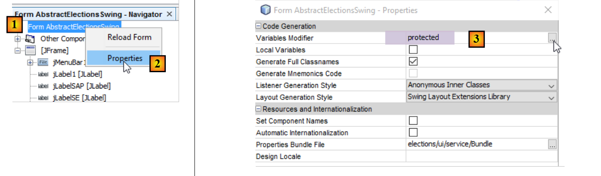 |
- mettre en [3], l'attribut [protected] ;
10.3.5. Implémentation de l'interface [IElectionsUI]
Revenons à la structure de notre application :
| 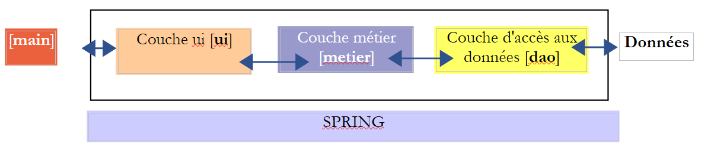 |
Ci-dessus la couche [ui] doit présenter l'interface [IElectionsUI] à l'objet [main] :
Cette interface a été définie dans le projet [elections-console-metier-dao-jdbc] et décrite au paragraphe 9.4, page 135. Comme ce projet est une dépendance du projet [swing], cette interface est connue.
Parce que la classe [AbstractElectionsSwing] est devenue abstraite, elle ne peut plus être instanciée par Spring. C'est la classe [ElectionsSwing] qui doit désormais l'être. La classe [ElectionsSwing] doit implémenter l'interface [IElectionsUI]. Son code évolue donc comme suit :
- ligne 1 : la classe [ElectionsSwing] implémente l'interface [IElectionsUI]
- lignes 4-6 : la méthode [run] de cette interface
Que doit faire la méthode run ? Afficher la fenêtre graphique. Comment fait-on cela ? On peut se laisser guider par la méthode [main] qu'à générée Netbeans dans la classe [AbstractElectionsSwing] et qui fait ce qui est souhaité :
Le constructeur [AbstractElectionsSwing] utilisé ligne 28 est le suivant :
- ligne 2 : la méthode [initComponents] est une méthode privée générée par le générateur de l'interface graphique. On ne peut changer son code.
La méthode [run] de la classe [ElectionsSwing] pourrait alors être la suivante :
-
ligne 6 : l'interface graphique est initialisée au moyen d'une méthode [init]. Ici, on voudrait appeler la méthode [initComponents] de la classe parent, mais celle-ci est privée. On ajoute alors dans la classe parent [AbstractElectionsSwing], la méthode [init] suivante :
-
parce qu'elle est dans la classe [AbstractElectionsSwing], la méthode [init] a accès à la méthode privée [initComponents] de la même classe ;
- parce qu'elle a l'attribut [protected], elle est visible dans la classe fille [ElectionsSwing] ;
- ligne 7 : l'interface graphique est rendue visible ;
Note : lorsque la méthode [run] a été écrite dans la classe [ElectionsSwing], la méthode [main] de la classe abstraite [AbstractElectionsSwing] peut être supprimée.
10.3.6. La classe exécutable
Revenons à la structure de notre application :
Nous voudrions que Spring instancie la couche [ui] comme il a été fait lorsque celle-ci était implémentée par une application console. Pour cela, il faut que la classe d'implémentation [ElectionsSwing] ait une référence sur la couche [métier] :
- ligne 1 : la classe [ElectionsSwing] est un composant Spring ;
- lignes 5-6 : injection par Spring d'une référence sur la couche [métier] ;
L'interface graphique est lancée par l'exécution de la classe [BootElectionsSwing] suivante :
 |
Nous avons expliqué un code analogue lorsqu'au paragraphe 9.5, page 135, nous avons expliqué le code des classes [AbstractBootElections] et [BootElectionsConsole]. Ligne 12, on récupère le bean nommé [electionsSwing] qui correspond au nom Spring standard pour la classe [ElectionsSwing].
10.3.7. Initialisation de l'interface graphique
Lorsque l'interface graphique est affichée, certains de ses composants ont été initialisés :
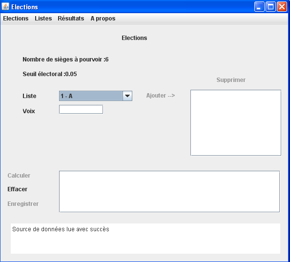
On voit ci-dessus :
- que le combo a été rempli avec les noms des listes ;
- que le nombre de sièges à pourvoir et le seuil électoral sont indiqués ;
- que certains liens ont été désactivés ;
- qu'un message de succès est affiché en bas de la fenêtre ;
A quel moment vont se faire ces initialisations ? Elles ne peuvent se faire qu'après initialisation du champ [electionsMetier] de la classe [ElectionsSwing]. En effet, les noms des listes vont être demandés à la couche [metier]. L'initialisation de ce champ va être faite par Spring dans l'ordre suivant :
- utilisation du constructeur sans paramètres de la classe [ElectionsSwing] ;
- injection des dépendances, ici la référence de la couche [métier] ;
-
exécution de la méthode [run] de la classe [ElectionsSwing] :
-
ligne 12, nous avons dit qu'on appelait la méthode [init] de la classe parent qui va dessiner les composants de l'interface graphique. Nous allons redéfinir cette méthode, localement, dans la classe [ElectionsSwing]. C'est dans cette méthode que nous initialiserons, avec des données cette fois, les composants de la fenêtre (combo, labels) :
La méthode locale [init] pourrait avoir le squelette suivant :
On notera bien, ligne 11, l'appel de la méthode [init] de la classe parent.
10.3.8. La classe [Utilitaires]
Un certain nombre de méthodes utilitaires statiques ont été rassemblées dans la classe [Utilitaires] :
| 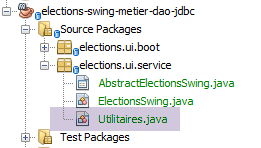 |
La classe [Utilitaires] est la suivante :
- ligne 9 : la méthode setEnabled fixe l'état de composants JLabel définis dans un tableau. La méthode setEnabled d'un composant JLabel permet d'activer ou de désactiver le JLabel.
Travail à faire : en suivant l'exemple de la méthode setEnabled de la ligne 9, écrivez la méthode setEnabled de la ligne 16 qui fait la même chose avec des composants JMenuItem.
10.3.9. Le code de la classe [ElectionsSwing]
Rappelons la structure générale de la classe [ElectionsSwing] :
Nous allons étudier les méthodes de la classe les unes après les autres.
10.3.9.1. La méthode [init]
Revenons sur l'interface graphique :
| 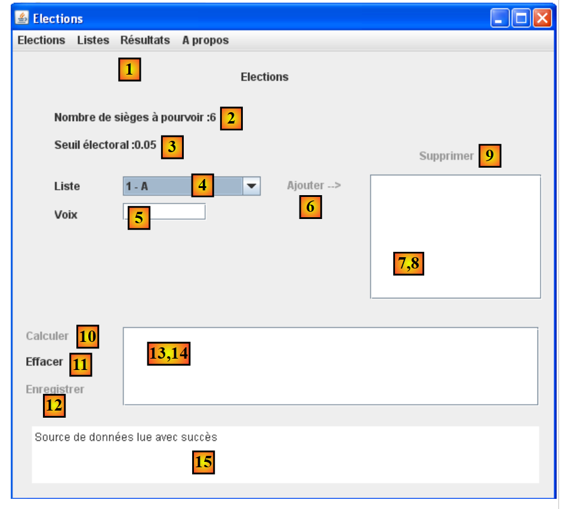 |
La méthode [init] a pour objectifs :
- de remplir le combo [4] avec les identifiants et noms des listes sous la forme [id - nom]
- d'afficher un message de succès dans [15]
- d'initialiser les labels [2] et [3]
- de désactiver certains liens
Le squelette de la méthode [init] pourrait être le suivant :
Travail à faire : complétez le code de la méthode [init].
A lire dans le cours : composants JTextField, JLabel
A savoir :
Un composant JList affiche les données présentes dans un modèle. Par défaut, ce modèle est de type DefaultListModel (lignes 2 et 3). Un objet de DefaultListModel se comporte un peu comme un type ArrayList :
- pour ajouter un objet o dans le modèle :
Dans cette application, l'objet o sera toujours de type String.
-
pour enlever l'élément n° i du modèle :
-
pour obtenir l'élément n° i du modèle :
Pour ajouter un élément au combo [jComboBoxNomsListes], on utilisera la méthode [addItem] :
Un composant JTextPane a les méthodes getText() et setText() pour lire / écrire le texte affiché.
10.3.9.2. Gérer l'état du lien [Ajouter]
Le lien [Ajouter] [6] n'est actif que lorsque le champ [5] des voix est non vide. Dans la classe [AbstractElectionsSwing], le gestionnaire qui suit les mouvements du curseur dans le champ [5] est le suivant :
La ligne 2 appelle la méthode [doMajLabelAjouter] de la classe [ElectionsSwing].
Travail à faire : complétez le code de la méthode [doMajLabelAjouter].
10.3.9.3. Affecter les voix à chaque liste
Pour chaque liste candidate de (4), on procède ainsi :
- choix d'une liste dans (4)
- saisie du nombre de voix dans (5)
- validation par un clic sur le lien [Ajouter]
Les erreurs de saisie sont signalées comme le montre l'exemple suivant :
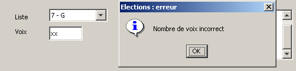
Si le nombre de voix est correct, la liste est ajoutée dans le composant (8), le nombre de voix effacé et le lien [Ajouter] éteint :
| 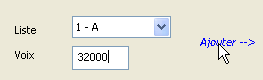 | 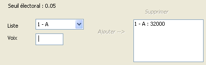 |
Dans la classe [AbstractElectionsSwing], le gestionnaire qui gère le clic sur le lien [Ajouter] est le suivant :
La ligne 3 appelle la méthode [doAjouter] de la classe [ElectionsSwing] :
- ligne 25 : à chaque fois que l'utilisateur ajoute des voix à une liste et valide son choix, cette liste est mise dans le champ [listesSaisies] de la ligne 9. On y enregistrera la liste avec les informations [id, version, nom, voix]. Les trois premières informations viennent des listes enregistrées initialement dans le tableau de la ligne 6. La méthode [getSelectedIndex] du combo permet de connaître l'indice de la liste sélectionnée ;
Travail à faire : complétez le code de la méthode [doAjouter].
10.3.9.4. Gérer l'état du lien [Supprimer]
Le lien [Supprimer] [9] n'est actif que lorsqu'un élément est sélectionné dans [8].
Dans la classe [AbstractElectionsSwing], le gestionnaire qui réagit au clic sur un élément de la liste [8] est le suivant :
La ligne 2 appelle la méthode [doMajLabelSupprimer] de la classe [ElectionsSwing].
Travail à faire : complétez le code de la méthode [doMajLabelSupprimer].
10.3.9.5. Supprimer une liste candidate
Le lien [Supprimer] [9] permet de supprimer le couple (nom,voix) sélectionné dans (8). Une fois la suppression opérée, le lien [Supprimer] est éteint. Il ne sera rallumé que sur sélection d'une nouvelle liste dans (8).
| 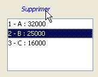 | 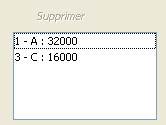 |
Dans la classe [AbstractElectionsSwing], le gestionnaire qui réagit au clic sur le lien [Supprimer] est le suivant :
La ligne 3 appelle la méthode [doSupprimer] de la classe [ElectionsSwing].
Travail à faire : complétez le code de la méthode [doSupprimer].
10.3.9.6. Gérer l'état du lien [Calculer]
Le lien [Calculer] [10] n'est actif que lorsqu'il existe au moins un élément dans [8].
Travail à faire : ajoutez le code nécessaire à la gestion de ce lien dans les méthodes [doAjouter] et [doSupprimer] écrites précédemment. L'option de menu correspondante sera également gérée.
A savoir : le nombre d'éléments d'un élément de type DefaultListModel est obtenu avec la méthode size().
10.3.9.7. Calculer les sièges
Le lien [Calculer] [10] permet de lancer le calcul des sièges et d'afficher les résultats dans (14). En cas d'échec (toutes les listes ont été éliminées), un message d'erreur est affiché dans [15]. Dans tous les cas, après calcul, le lien [Calculer] [10] est désactivé.
Dans la classe [AbstractElectionsSwing], le gestionnaire qui réagit au clic sur le lien [Calculer] est le suivant :
La ligne 3 appelle la méthode [doCalculer] de la classe [ElectionsSwing].
Travail à faire : complétez le code de la méthode [doCalculer].
10.3.9.8. Enregistrer les résultats dans la source de données
Le lien [Enregistrer] (12) permet d'enregistrer les résultats du calcul des sièges dans la source de données. Une fois l'enregistrement opéré avec succès, le lien [Enregistrer] est désactivé. En cas d'échec, un message d'erreur est affiché dans [15]. Dans tous les cas, le lien [Enregistrer] est ensuite désactivé.
Dans la classe [AbstractElectionsSwing], le gestionnaire qui gère le clic sur le label [Enregistrer] est le suivant :
La ligne 3 appelle la méthode [doEnregistrer] de la classe [ElectionsSwing] :
Travail à faire : complétez le code de la méthode [doEnregistrer].
10.3.9.9. Effacer les résultats
Le lien [Effacer] (11) permet d'effacer les résultats affichés dans (14).
Dans la classe [AbstractElectionsSwing], le gestionnaire qui gère le clic sur le label [Effacer] est le suivant :
La ligne 3 appelle la méthode [doEffacer] de la classe [ElectionsSwing] :
Travail à faire : complétez le code de la méthode [doEffacer].
A savoir : la classe DefaultListModel a une méthode clear() qui supprime tous ses éléments.
10.3.10. Améliorations
L'interface graphique précédente peut être améliorée de diverses façons : l'utilisateur peut, par oubli, ne pas saisir les voix de toutes les listes présentes dans le combo et par ailleurs, il peut, par erreur, saisir plusieurs fois les voix d'une même liste.
Travail à faire : améliorez l'algorithme afin que ces deux cas ne puissent pas se produire. Une solution simple est de gérer un dictionnaire des listes saisies dont les clés seraient les éléments du combo. On fera également en sorte que le lien [Calculer] ne soit allumé que lorsque la totalité des listes a été saisie.
A lire dans le cours [ref1] : la classe HashTable au paragraphe 3.8.